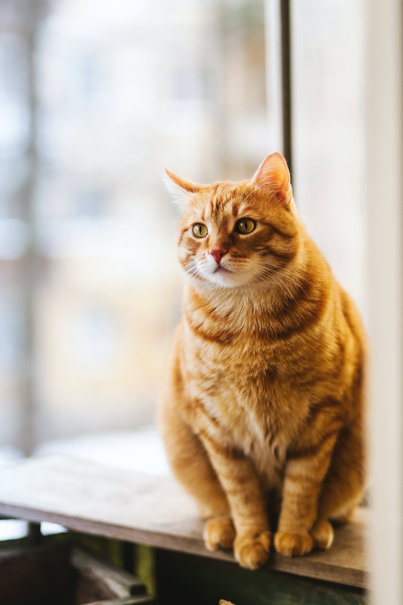

<h1>Cat cat cat</h1>
<button (click)=showCatPic()>Show cat pic</button>
<button (click)=onClick()>new</button>




https://javascript.info/blob
https://jsfiddle.net/wilt/1u9fgyh0/
https://stackoverflow.com/questions/51019467/convert-blob-to-image-url-and-use-in-image-src-to-display-image/51019799
https://angular.io/guide/displaying-data
